Phase 2 · refined direction · kiyotopkop.me
Rackmount.
A server room on the night shift, set in poster type. Every project is a unit in a rack, the name is set like a gig poster, and the About page is the desk the rack sits next to.
These are working pages, not pictures. Use the review bar (bottom right) on any page to switch palette and theme.
Your three answers 01
The three answers came through as blank placeholders, so I picked for you and kept every option switchable. Tell me if you want any of them changed.
- Palette
New combo: #303
Deep Slate Olive, Naples Yellow, Peach Red and Neutral Gray. It keeps Bold Motion's peach red and drops the black and purple that most dev portfolios use. Olive reads as field kit, which suits “defender by habit”, and the rack's hardware looks right in it.
#295 Rack violet and #298 Poster red are one click away in the review bar.
- Theme
Dark + light
Dark is the default (“lights off”): the rack's LEDs and the monitor glow carry the mood. Light follows the visitor's system setting, or the Lights switch in the nav. On the About page the desk lamp is the switch.
Cost: one extra token set per palette. Everything passes WCAG AA in both.
- Layout
Multi-page
Home, Work (plus a case page per project) and About. That gives each of your three picks its own page, which keeps the “one signature effect per page” rule. A recruiter still gets name, role, projects and contact on Home without clicking.
One long page would have meant three big effects stacked on one scroll.
What I improved 02
- The rack is now CSS 3D, not WebGL.Every unit is a real link: keyboard, screen readers and search engines can use it. No Three.js download (about 600 KB before compression), and the same rack runs on phones.
- One unit per project.Six units for six projects. AdGuard and the local model moved inside Home Lab and Hermes instead of taking their own slots.
- Your K6 logo lives in the rack.The LCD shows
$ whoami → kiyo. Hover a unit and the LCD types out that project's one-liner, so there's no floating tooltip. - Racking intro, touch rules, flat view.Units slide into the rack on load in under 0.9 s. On phones, the first tap pulls a unit out and the second opens it. “Flat view” turns the rack to face you (the plain-view rule).
- Bold Motion's type, moved where it works.The name is set poster-style next to the rack. The cursor-weight effect became the Work index signature, and on phones the weight follows scroll position in pure CSS.
- A security hook on Home.“Before launch, I attacked my own app”: real found/fixed pairs from the AutoShop audit, checked against the seven migrations. The full audit is on the case page.
- The desk earns its place.It's redrawn as a night scene in the site palette (monitor glow, a router-to-laptop cable with packets). Its objects now hold the About content (certifications, school, languages, home lab, Hermes, SOC practice) instead of repeating the projects.
- Phones get their own layout.The name stacks, the rack shrinks and stays tappable, and the desk becomes a bigger, swipeable scene with cropped legs. Case-study motion pieces get a 9:16 cut in Phase 4.
- Title morph between pages.The AutoShop title on Home and Work morphs into the case-study title using View Transitions. Browsers without support just load the page normally.
- Honest copy.The Work page says up front that the repos are private and offers a walkthrough. Teammates are credited by name on DePedal.
Page flow 03
Home
/SignatureThe rack: pull-out units, LCD readout
- Hero: name, role, line, CTAs, rack
- Marquee band
- Selected work: three rows with problem, role, stack and result
- Before launch, I attacked my own app
- Contact
Work
/workSignatureTitles thin and glow under the cursor (scroll on phones)
- WORK. + why there are no repo links
- Six project rows, each with problem, role, stack and result
- Contact
Case
/work/autoshop …SignatureThe project's motion mock-up
- Title, summary, role, client, dates, stack
- Motion mock-up (demo data)
- Problem → My role → Approach → (Audit) → Result → Links
- Next case
- Contact
About
/aboutSignatureThe desk: clickable objects, lamp = lights
- Hi, I'm Kiyo + bio + desk
- Experience
- Education
- Certifications + LinkedIn verify
- Stack & tools
- Languages
- Contact
On every page: the nav (Work · About · Contact · Lights · Resume) and the contact footer (Available Dec 2026, email, LinkedIn, GitHub, Resume PDF, “How this site is secured”, security.txt).
Desktop + mobile 04
Palette #303, dark theme, except where marked. Desktop at 1440 × 900, phone at 390 × 844.
Home open →
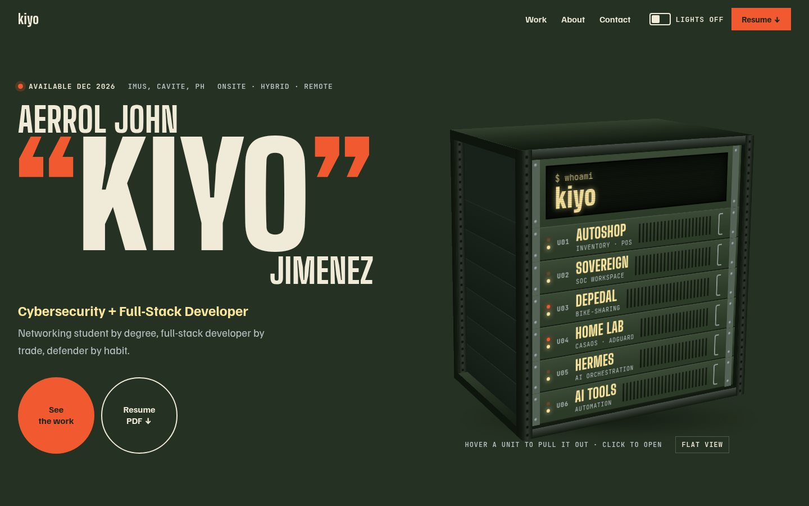
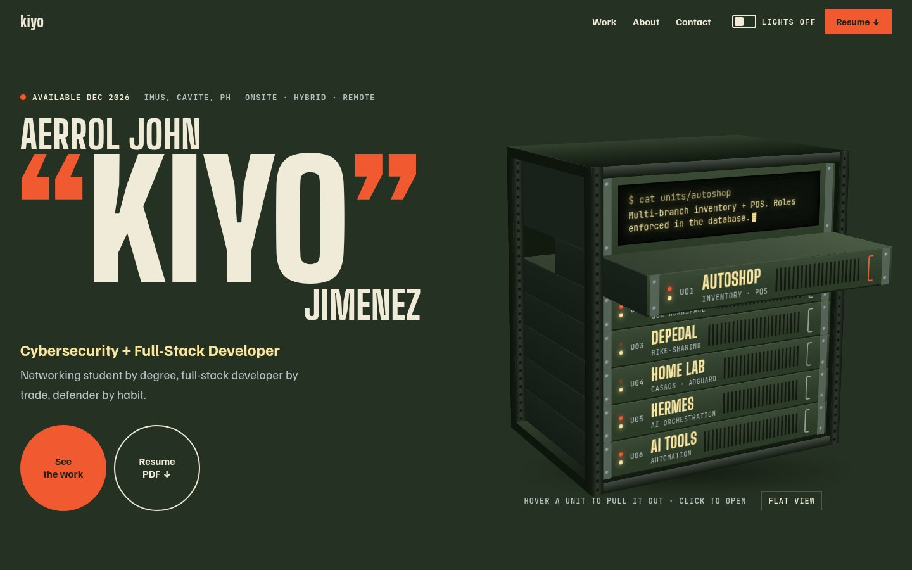
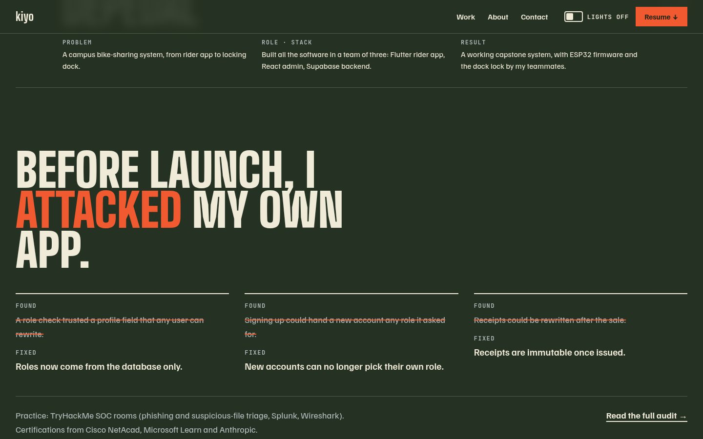
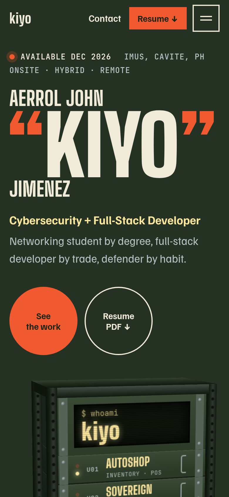
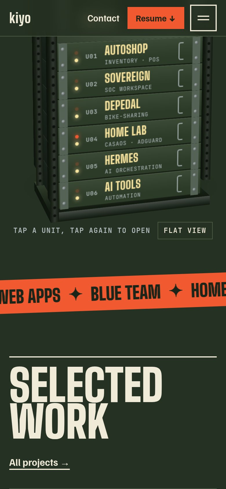
Work open →
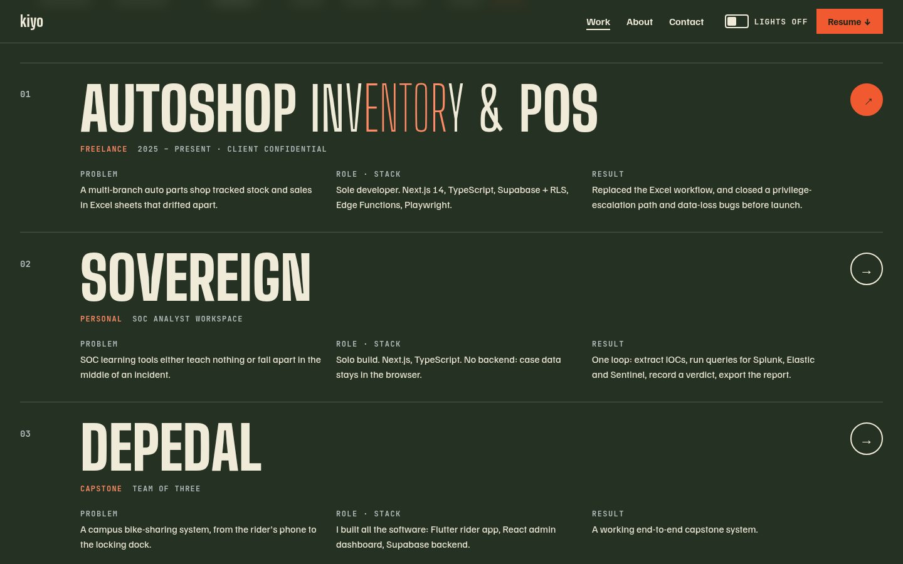
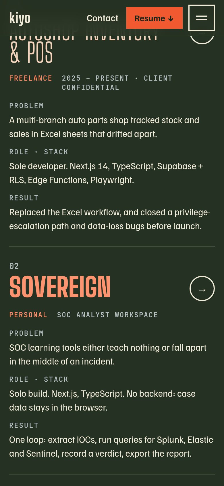
Case study open →
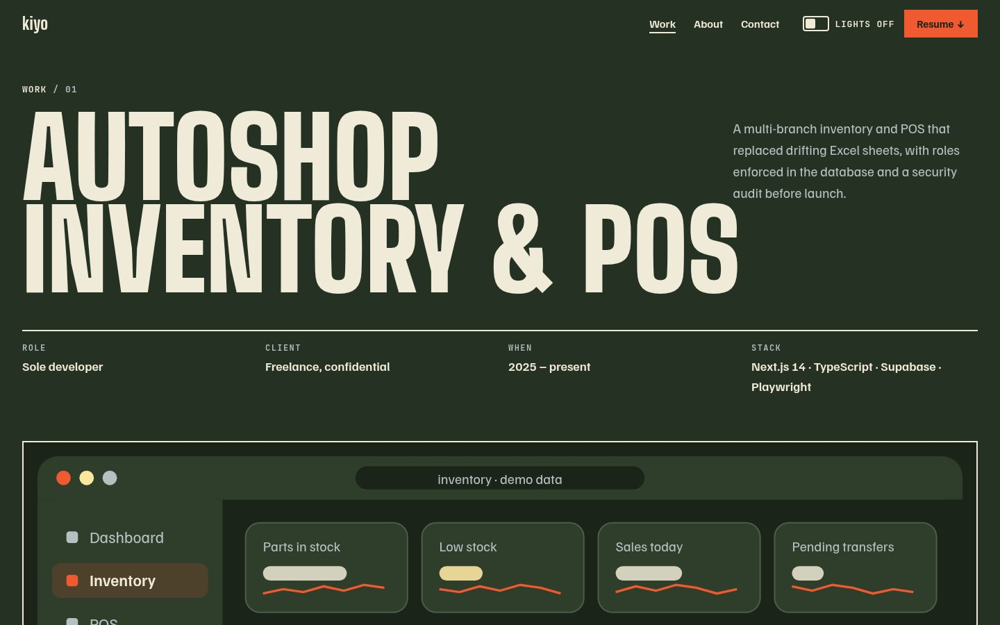
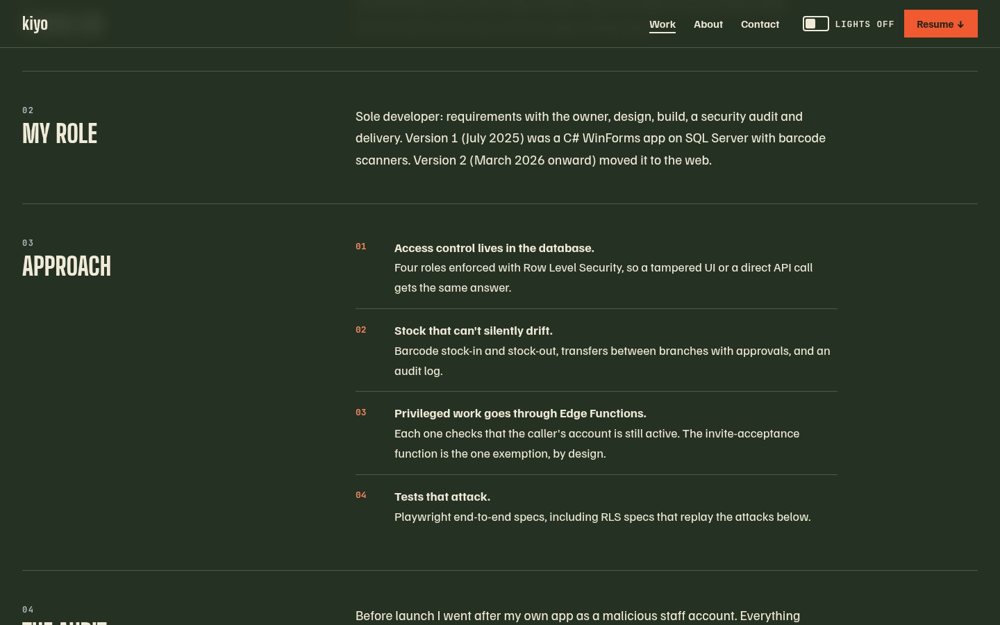
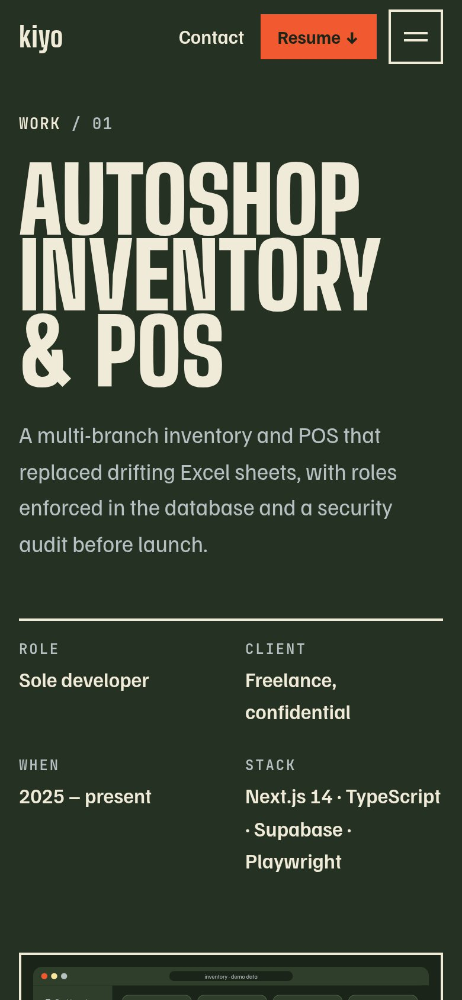
About open →
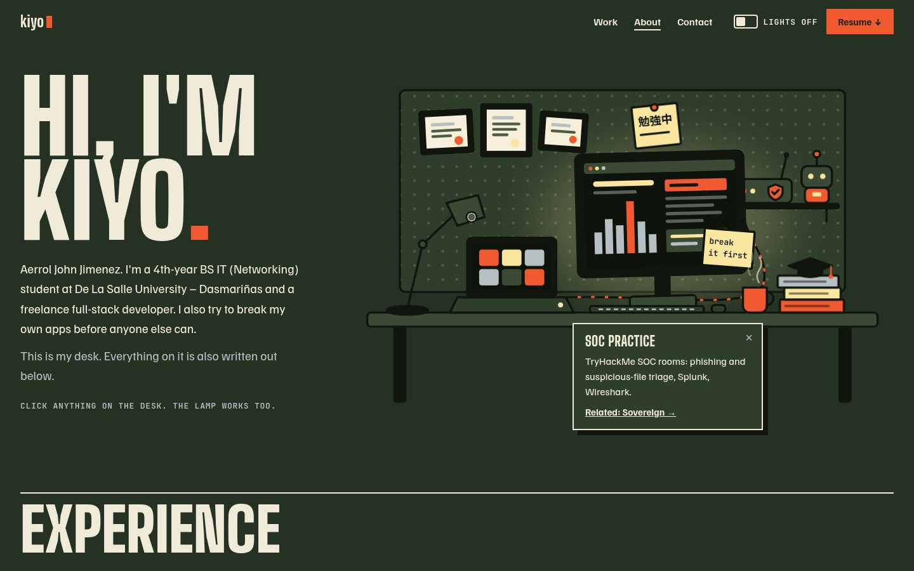
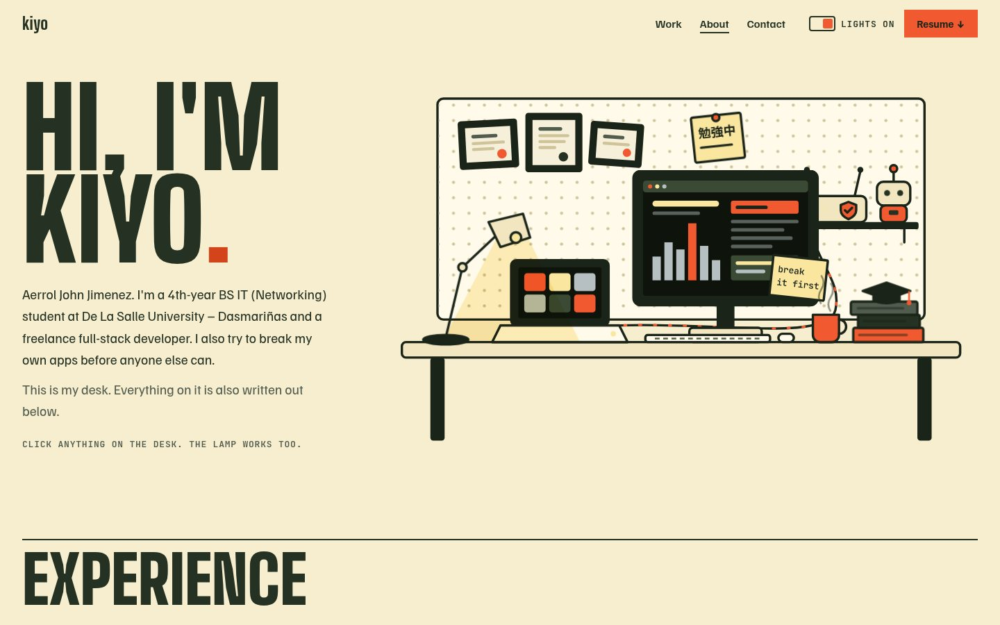
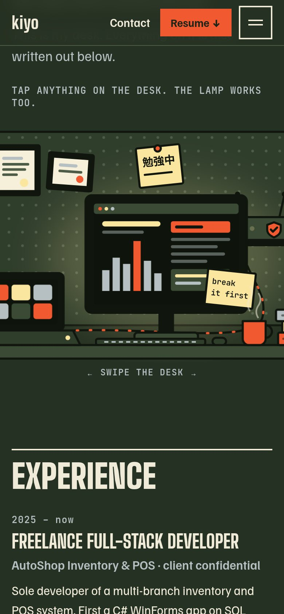
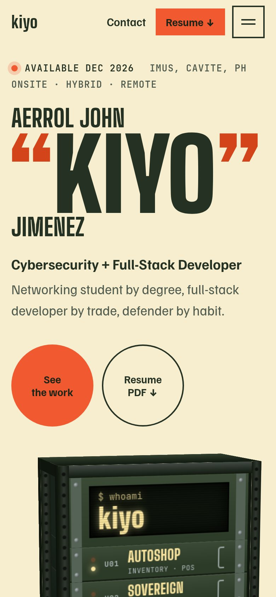
Color tokens 05
Every color is a Sanzo Wada combination color, or a tint or shade of one where a surface or an AA text color needed it. Numbers are WCAG contrast ratios: 4.5 for text, 3 for large display type.
--bg / --bg-2Page, and the footer and sunken areas--surface(-2)Panels and the desk pegboard--lineRules and dividers--fgText and display type--mutedSecondary text and labels--accentCTAs, marquee band, highlights--accent-textAccent used as small text (AA)--quoteThe quote marks in “KIYO”--roleThe role line under the name--led-a / -bRack LEDs and status dots--rk-*Rack hardware: stays dark in both themes--m-ok/warn/badMock UI states (bad = blocked attack)Type scale 06
Big Shoulders Display (variable, 100–900) for display type, Familjen Grotesk for text, JetBrains Mono only for terminal bits and small labels. Sizes are fluid between a 390 px phone and a 1440 px desktop. Body never goes below 17 px.
Motion rules 07
- One signature per pageHome: the rack. Work: weight-reactive titles. Case: the project's motion piece. About: the desk. Nothing else gets to be loud.
- Supporting motion onlyThe marquee (pauses off-screen and on hover), magnetic CTAs (mouse only), 24 px fade-up reveals, and the title morph between pages.
- One easing, three speeds
cubic-bezier(.2,.8,.2,1)at 150 ms for hovers, 300 ms for UI, 600 ms for reveals. The spring curve is only for the desk objects and the lights switch. - Short intros, no loadersThe rack's racking-in intro is the longest, at 0.84 s. Content is readable from the first frame.
- Never hijack the scrollNative scrolling everywhere. Scroll-linked effects (the phone weight effect) are CSS scroll timelines, so the browser keeps control of the scroll.
- Reduced motion = static and completeWith
prefers-reduced-motion, all animation and transitions stop, the rack sits still with its links working, and the title morph is off. - Pause what you can't seeThe marquee and the rack's parallax stop when off-screen. Nothing runs a loop while idle.
- Touch is not hoverEffects that need a mouse (magnetic buttons, cursor weight, parallax) turn off on touch screens, and each one has a touch version or none.
Decided 08
- Direction approved.The real site keeps the Lights switch and also lets visitors pick the palette (#303 olive by default, #295 violet, #298 red).
- TopServe copy fixed.Kiyo made and presented the slide decks. DePedal and the stack list now match the resume.
- Resume received, not published.It lists a phone number and names the AutoShop client, so the site will link a web-safe version without either.
- Published here.kiyotopkop.github.io/portfolio-mockups/refined/